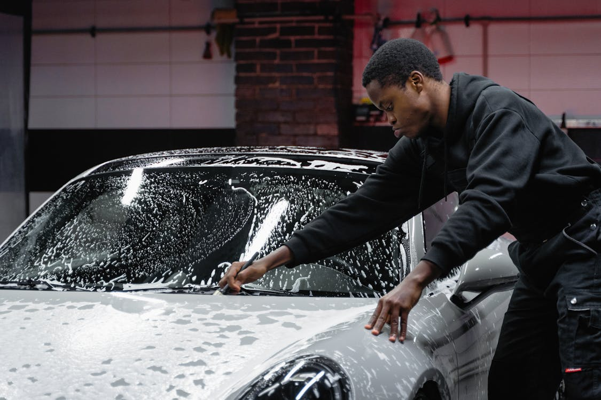

Services

Oil Change
Keep your engine running smoothly with our quick and efficient oil change service.
View More

Keep your engine running smoothly with our quick and efficient oil change service.
View More